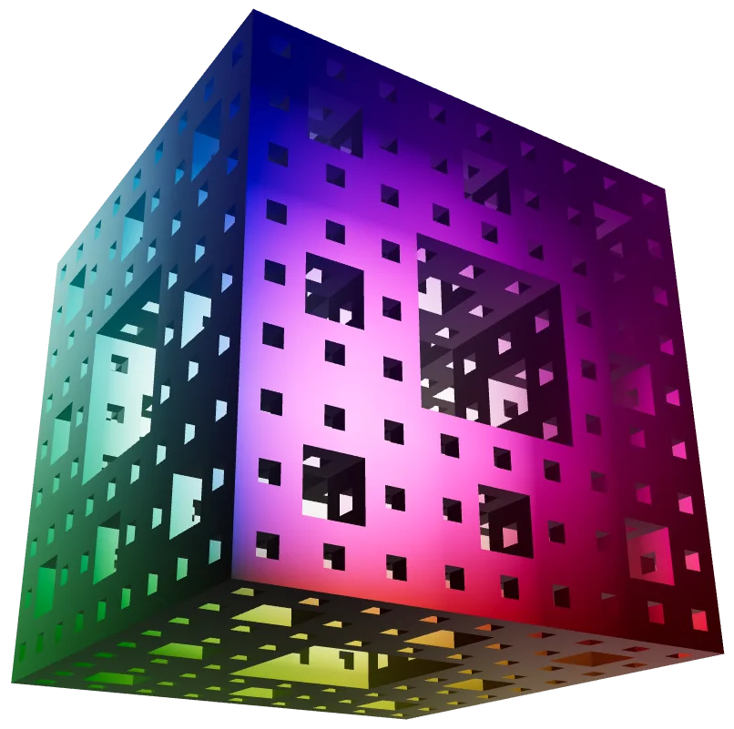

OManifold provides OCaml bindings to the Manifold solid modelling (C++) library, with integrations into the OCADml ecosystem. Via Manifold, this library provides a means to verify, smooth, and perform boolean operations (with guaranteed manifold output) upon meshes generated in OCADml.

OManifold -- top level library interface
Polygons -- complex polygon sets (extrudable to Manifold.t)Manifold -- manifold 3d solids (set of meshes)Box -- 3d bounding box type and operationsMeshRelation -- relationship of current to previous meshesCurvature -- vertex curvatures of a manifoldManifold provides a level set algorithm for the generation of manifold meshes from signed distance functions (positive inside, negative outside). Unfortunately due to the OCaml runtime lock, only sequential (without multiprocessing or GPU acceleration) execution of sdfs defined here are possible, thus performance will be slower than using Manifold or another SDF CAD library such as libfive directly.
MMesh -- manifold's 3d mesh input/output representationMMeshGL -- mesh output suitable for graphics librariesExport -- write meshes/manifolds to disk via assimpThis library provides a means of performing boolean operations, validation, and export of triangular meshes generated with OCADml without the need to run an additional tool. At this time however, the user experience, particularly in debugging non-manifold meshes may be smoother using OSCADml, which has the advantage of the OpenSCAD viewer.